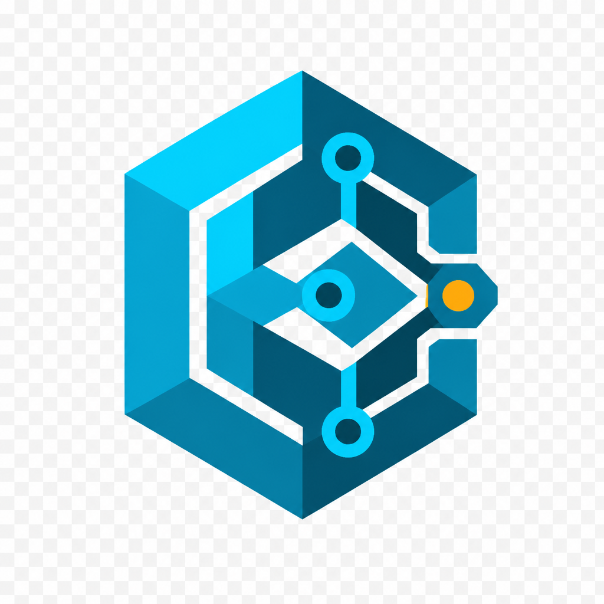

BinarisBinaris is a production-minded RE platform: real PE/ELF/Mach-O analysis, Capstone disassembly, malware & crypto engines, network intel, graphs, and chat that must cite what it found in the binary.
Hashes, packers, imports/exports, strings/IOCs, Capstone disasm, compiler heuristics.
Rename and chat grounded in Evidence objects—no invented symbols.
Malware families, weak crypto, GeoIP/RDAP, C2 heuristics, DFIR exports.
Docker, K8s, OAuth hooks, snapshots/diff, Python & Rust SDKs, CI.
flowchart LR
Analyst --> Web[Next.js]
Analyst --> SDK[SDKs]
Web --> API[Axum API]
SDK --> API
API --> Store[(Storage)]
API --> DB[(Postgres/Memory)]
API --> Pipe[Pipeline]
Pipe --> Engines[Analysis Engines]
Engines --> Reports[Reports + Graphs]
Engines --> AI[Evidence Index + Chat]
flowchart TD
Upload --> Hash
Hash --> Identify
Identify --> Static
Static --> Disasm
Disasm --> Graphs
Graphs --> Security
Security --> Malware
Malware --> Network
Network --> Reports
Reports --> ChatIndex[Chat index]
| Surface | Link |
|---|---|
| Landing / docs (this page) | ayushkumarsingh09.github.io/Binaris |
| Web workspace | Deploying… check README |
| API | Deploying… check README |
| Repository | github.com/Ayushkumarsingh09/Binaris |
Demo login for self-hosted: demo@binaris.dev / demo-password-change-me
git clone https://github.com/Ayushkumarsingh09/Binaris.git cd Binaris docker compose up --build # Web http://localhost:3000 · API http://localhost:8080/healthz